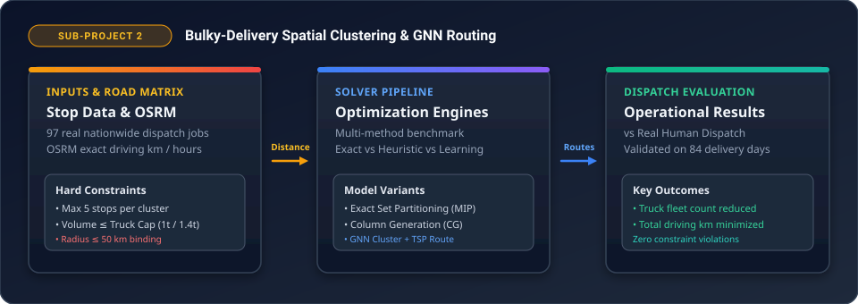

End-to-end pipeline: OSRM Korean road network distance extraction, Exact MIP set partitioning, Column Generation, and Multi-Task GNN routing with 2D/3D physical packing feasibility.
Comprehensive dispatch architecture: raw stop coordinates and package volume → OSRM driving matrix → candidate cluster generation with hard radius, volume, and count limits → exact Set Partitioning and Column Generation bounds → Multi-Task Neural Router (GNN, Transformer, Pointer) with exact physical floor-packing validation.
